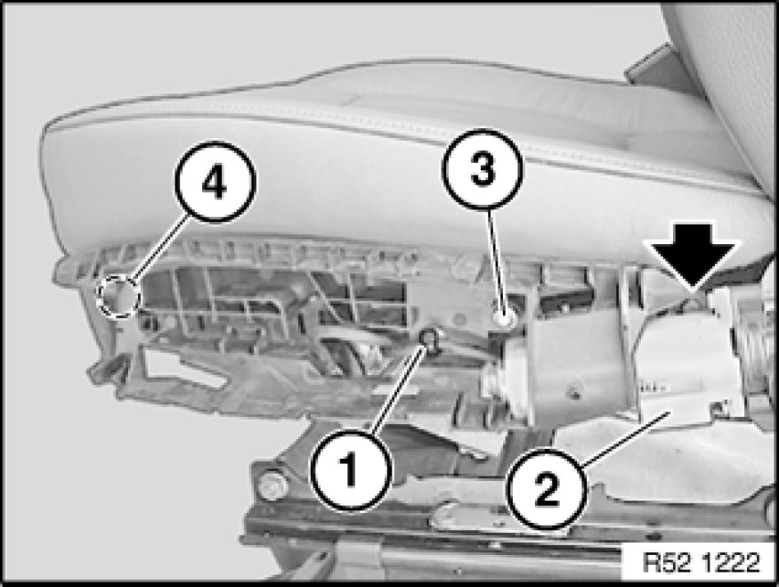

Removing and Installing Carrier For Outer Cover on Left or Right Front Seat (Electric)
52 14 ... - Removing and installing carrier for outer cover on left or right front seat (electric)

Necessary preliminary tasks:
- Remove outer cover Removing and Installing/Replacing Outer Cover on Front Left or Right Seat (Normal/Electric)

Detach cable strap (1).
Unlock and disconnect plug connections (2) on servodrive.
Unscrew bolt (3).
Tightening torque 52 10 04AZ 52 10 Front Seats.
Unclip carrier in marked area and remove.
Installation:
Replace cable strap.
Make sure carrier is correctly seated on seat mechanism.